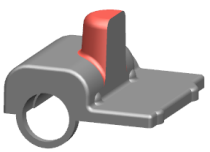

Move Face Cut and Heal
When you use the Move Face command, a Move Behavior list offers better control over the move behavior. You can:
-
Cut a set of faces on a body using the Cut and Paste option.
-
Paste the cut faces immediately. To do this, you must select the Paste check box. If you do not paste the faces immediately, they are still available for paste using the Paste Face command.
-
Choose whether you want the neighboring faces to be healed. A Heal check box controls healing.
|
|
|
|


In previous releases, you could not use the Move Face command to move a face when NX was unable to heal the neighboring faces. If you used the Move and Adapt option to move the boss shown, the motion face was consumed.
|
|
 |
|
Note |
The Move Behavior options are available in the Move Face dialog box only when you create a feature. |
Where do I find it?
|
Application |
Modeling, Shape Studio. Advanced Simulation, Manufacturing |
|
Toolbar |
Synchronous Modeling→Move Face |
|
Menu |
Insert→Synchronous Modeling→Move Face |
|
Location in dialog box |
Settings group→Move Behavior list |